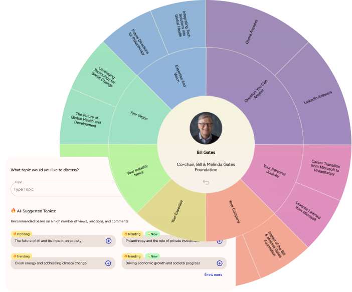
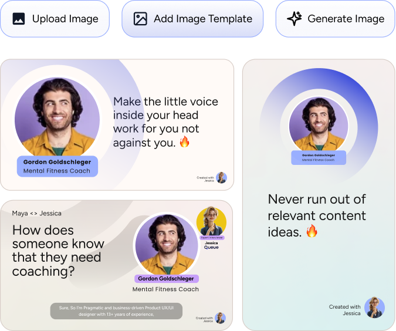
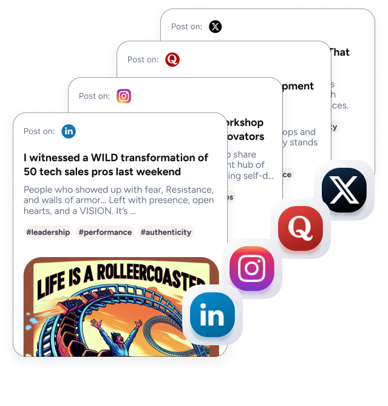

Never run out of ideas. Jessica finds top trending topics in your niche – things your potential customers are dying to hear your insights on.
Share your expertise & insights in a quick but deep-dive interview with Jessica. She’ll help you expand on your thoughts and answer the questions your audience cares about most.
Guide our AI assistant to adjust the tone of voice & style of your content based on your existing posts, favorite LinkedIn personas, or a custom tone.
Jessica automatically creates ready-to-post images for every interview. You can also upload your own images, or generate new ones using AI.
One quick 5 minute interview on a trending topic results in multiple posts for LinkedIn, X, Instagram, Quora, and more! That’s content for an entire week – or even month!
Jessica even turns your interviews into engaging podcasts. Get your own podcast page, and have your insights featured among top experts.
Publish direct from your dashboard to save time and effort. Jessica becomes your mission control for all your social media activities.